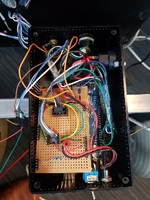
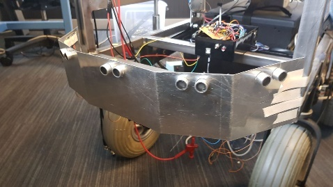

- Welcome
- Project Willy
- Startup Willy
- Configuration
- ROS
- Technical
- Web interface
- Research
- Design
- Status and Advice
- Archive
-
-
(2017/2) Research === Inventorisement Current status
Version history
| Version | Date | Person | Note |
|---|---|---|---|
V0.1 |
04-02-18 |
Martijn van Olst |
Initial document |
V0.2 |
19-02-18 |
Gerard Zeeman |
Translated to English |
V0.3 |
20-02-18 |
Jonathan ten Hove |
Removed Dutch, added sources, checked |
V0.4 |
Unknown |
Martijn van Olst |
Added advantages and disadvantages |
V0.5 |
Unknown |
Martijn van Olst |
Added findings & To Do |
V0.6 |
12-03-18 |
Martijn van Olst |
Updated findings & To Do |
V0.7 |
12-03-18 |
Gerard Zeeman |
Updated schematics |
V0.8 |
12-03-18 |
Vincent van Dijk |
Added Linux packages mapping |
V0.9 |
13-03-18 |
Martijn van Olst |
Added brake functionality |
V1.0 |
15-03-18 |
Jonathan ten Hove |
Added Web Platform |
1. Preface
This document contains a description of the current state of Willy, when it was transferred by the previous group. This document also contains a list of advantages and disadvantages of the state at the moment and a list of recommendations from our side concerning alternative adjustments. Hardware schematics are found in the appendixes.
2. Inventories Willy
We made a summary of findings and summary
3. Findings
-
Cables are not reliable
-
Brake function of engines unknown
-
Realization of frame is not equal to the design
-
Chatbot documentation is not available
-
Computers becomes too hot
-
Computers cannot be rebuilt from scratch
-
There is no backup and backup procedure
-
Startup guide is not up to date
-
ROS framework is outdated
-
Accespoint not necessarily
-
Power usage too high
-
Battery capacity too low
-
Startup problems
-
Frame is not attached properly
-
Passwords are inconsistent
-
Web interface unreliable
-
Autonomous driving not working
-
Steering is too sensitive
4. To Do
-
Renew cables and manage cables
-
Research operation of brakes
-
Research design and placing of parts
-
Research social interaction
-
Add a way to cool the computer
-
Mapping of Linux packages
-
Research backup & creating a backup
-
Make startup guide up to date
-
Research possibilities of updating ROS framework
-
Setup internal Wi-Fi hotspot
-
Reduce power usage
-
Increase battery capacity
-
Increase usability
-
Attach frame correctly
-
Make passwords unambiguous
-
Make web interface reliable
-
Research autonomous driving
-
Reduce sensitivity of steering
5. Inventories of sensors
6. Findings
-
Documentation not fully completed
-
Sensitive to malfunction
-
Mounting sensors
-
Inaccurate GPS data
-
Inaccurate Compass data
-
Wheel encoders aren’t working
-
Microphone not present
7. To Do
-
Create schematics of hardware layout
-
Replace cables
-
Remount sensors
-
Remount GPS sensor
-
Remount Compass sensor
-
Remount wheel encoders or research alternatives
-
Buy microphone
8. Motor encoder
Willy is driven with 2 scooter motors. The turning of the wheels are measured with wheel encoders. These encoders measure the number of steps the motors have turned and send this data to the motor controller, which processes this data.
The need of the current motor encoders is optional. At the moment of writing, the motor encoders aren’t working at all. The reason why these motor encoders are chosen is to measure the distance and speed of the motors. By combining this data with the sonars, willy will be able to avoid obstacles inside. Because of the fact that these encoders aren’t working we have to do some research to alternatives.
It is unknown why this controller is chosen. However previous documentation does mention the exact model in use. (System overview V1.0, 2017) (Systeem Dossier, 2016)
Honywell Clarostat 600-128-CBL. Specs sheet
| Product | Product |
|---|---|
600-128-CBL |
600-128-CBL |
Encoder Type |
Encoder Type |
Optical |
Optical |
Pulse Per Revolution |
128 |
Output |
2-square wave, Channel A leads Channel B by 90° electrically in counterclockwise direction |
Output Voltage |
2.4 Vdc min. (high); 0.4 Vdc max. (low) |
Operating Temperature |
-40 °C to 65 °C [-40 °F to 149 °F] |
Storage Temperatue |
-55 °C to 110 °C [-67 °F to 230 °F] |
Rotational Life |
10 Million shaft rotations, min. |
Operating Speed |
Operating Temperature |
Terminal |
Cable with four-lead ribbon, 28 AWG, IL-W-168780 Type B or equivalent insulation |
Source voltage range |
5 Vdc ±5% at 30 mA max. plus external requirements |
Supply Current |
30 mA |
Motor controller
Willy contains 2 motors from a second-hand mobility scooter. A previous project group has chosen this option as documented in the ‘Ontwerp verslag’. (Ontwerpverslag, 2016)
These motors need 24 volts and use 20 amps. One of the previous project groups created the motor controller to control the motors. This is documented in the ‘Systeem dossier’ from a previous project group. (Systeem Dossier, 2016)
This motor controller is made by using an Arduino Mega and a custom shield with additional custom hardware. This hardware makes sure the data from the wheel encoders are sent to the proper digital pins on the Arduino board. The motor controller processes the data and sends it to the ROS framework. This data is then processed by the WillyController, which is running as a node on the ROS framework.
The current to the motors is also controlled by this Arduino.
The motor controller is built as shown below:

9. Motor brake functionality
The two engines of willy contain both a brake. This brake is controlled by the engine itself. When the active signal to the motors is lost, the motor will automatically activate the brake. To start the driving_willy project, you NEED to deploy the brakes. Otherwise Willy will not drive!


Make sure to deploy the brakes. Otherwise Willy won’t work!! There is only one way to detect if the brakes are deployed. It’s by simply testing if the wheel can turn (Or a very little bit) anymore.
10. Ultrasonic sensors
To prevent collisions, ultrasonic sensors are used. These sensors measure distance by using sound. This is made possible by sending out bursts of high frequency noise, and then waiting for a reflection of that sound.
By using this data Willy is be able to decide if he is able to drive any further in a certain direction. In the event of Willy being not able to drive any further, he will decide if there is a direction where he is able to drive further. This way Willy will be able to drive around autonomously without collisions. How Willy reacts to objects in his navigation is researched by a previous group. (Navigation design v0.1, 2017)
The sensors all use 5V as can be seen in the schematic:
(!!!OLD!!!)
As shown in the schematic above, all the 16 sensors are connected to the Arduino.
The sensors are connected in the following order:
| Arduino Digital Pin Number | Sonar Sensor Number |
|---|---|
3 |
Sensor 0 |
4 |
Sensor 1 |
5 |
Sensor 2 |
6 |
Sensor 3 |
7 |
Sensor 4 |
8 |
Sensor 5 |
9 |
Sensor 6 |
10 |
Sensor 7 |
11 |
Sensor 8 |
12 |
Sensor 9 |
13 |
Sensor 10 |
A0 |
Sensor 11 |
A1 |
Sensor 12 |
A2 |
Sensor 13 |
A3 |
Sensor 14 |
A4 |
Sensor 15 |
The sensors are placed as follows:

It should be noted that not all the sensor are read at the same time. All odd numbered sensors are read first, and after a small delay the even numbered sensors are read. This is because sensors placed next to each other can interfere the readings of each other.
11. Kinect Sensor

As a method to navigate inside, the Kinect was chosen. A Kinect can create a framework of a person and see all movements of that person. By adding a Kinect to willy, willy will be able to recognize people and interact with them by using the speech recognition of the Kinect.
There are two versions of the Microsoft Kinect: Kinect 1 for Xbox 360 and Kinect 2 for Xbox one. See table 1 which list all the different features of both versions.
| Feature | Kinect 1 | Kinect 2 |
|---|---|---|
Color Camera |
640 x 480 @30 fps |
1920 x 1080 @30 fps |
Depth Camera |
320 x 240 |
512 x 424 |
Max Depth Distance |
~4.5 M |
8 M |
Min Depth Distance |
40 cm in near mode |
50 cm |
Depth Horizontal Field of View |
57 degrees |
70 degrees |
Depth Vertical Field of View |
43 degrees |
60 degrees |
Tilt Motor |
Yes |
no |
Skeleton Joints Defined |
20 joints |
25 joints |
Full Skeletons Tracked |
2 |
6 |
USB Standard |
2.0 |
3.0 |
The main difference which is most important for us is the Field of View (FoV). The bigger the FoV, the more Willy can see in front of him. The Kinect 2 can also recognize more people and can see further away, which are both nice features to have when the social aspect of Willy will be implemented in the future. This makes the Kinect 2 more futureproof than its precursor. (Kinect 1 vs 2 specifications: , sd) (Kinect 1 specifications, sd) (Main factors/features of most industrial computer vision hardware., sd)
12. GPS & Compass sensor
To allow Willy to drive outdoor by using a precomputed route, a GPS
sensor and a compass are required. The GPS sensor is linked to the
WillyController using ROS. In WillyController the raw data is processed
to usable coordinates. These coordinates are only used to draw a line
where Willy has driven in the code of the previous group.
The Compass is used to determinate the direction of willy. This is
needed for navigation when willy is going to drive precomputed routes.
The sensors are connected according to the following scheme:

As can be seen in the scheme, there are two Arduino’s used to measure sensor data. Both Arduino’s are connected with I2C (see pins A4 and A5). The second Arduino with the GPS sensor is powered with the 5V pin from the first Arduino. At the moment of writing this has not been fixed and reduced to one Arduino.
13. LIDAR sensor
The previous group has also done research on a Lidar sensor. Unfortunately the previous documentation stated that it was not possible to link a Lidar to ROS. Also other methods where somehow researched by a previous group but not in the form of a Lidar. (Research localization system v1.1, 2017)
A LIDAR sensor uses a laser to measure distance. With these measurements the sensor makes a map of all the objects in the environment.
 The current state of
Willy has no LIDAR installed. The previous group has done some research
concerning LIDAR and the link to ROS. But came to the conclusion that it
is not possible to create a link between LIDAR and ROS. Therefore they
decided to not implement the LIDAR sensor.
The current state of
Willy has no LIDAR installed. The previous group has done some research
concerning LIDAR and the link to ROS. But came to the conclusion that it
is not possible to create a link between LIDAR and ROS. Therefore they
decided to not implement the LIDAR sensor.
After doing some research we found that it is possible and supported to link ROS to a LIDAR sensor.
14. Avantages & Disadvantages
| Items | Advantages | Disadvantages |
|---|---|---|
Motor encoder |
|
|
Motor controller |
|
|
Ultrasonic sensor |
|
|
Kinect sensor |
|
|
GPS & Compass sensor |
|
|
LIDAR sensor |
|
|
Mini PC |
|
|
15. Operation system of Willy
Currently, Willy is operating using ‘Linux Ubuntu 14.04’ as operation system. The ROS-framework is used for centralized communication between nodes. Nodes are referred as different software/hardware components of ‘Willy, think of; GPS, sensors, compass and software functions. Some nodes may require ‘dependent-ROS-packages’. To execute and compile software nodes, these packages are required. Both ROS and dependencies require the same version. The current version of ROS is ‘ROS-kinetic’, the newest version is ‘ROS-Lunar’. Both ROS, ROS-dependencies and Ubuntu must be updated. Afterwards the code can be tested and compiled in the new environment.
16. Current installed packages
The first step in updating the OS is to determine which packages and dependencies are installed. Because previous teams have made a lot of changes to ‘Willy’, not all Linux packages may be still required. To list the manual installed packages, the following command was used.
comm -23 <(apt-mark showmanual | sort -u) <(gzip -dc /var/log/installer/initial-status.gz | sed -n 's/^Package: //p' | sort -u)
The following packages where manually installed;
brightness-controller
dhcpcd5
dotnet-sdk-2.0.0
git
google-chrome-stable
htop
nmap
openssh-server
pgadmin3
postgresql
python-pip
*ros-kinetic-desktop-full*
*ros-kinetic-joystick-drivers*
*ros-kinetic-rosbridge-server*
*ros-kinetic-rosserial-python*
*ros-kinetic-rosserial-server*
*ros-kinetic-teleop-twist-joy*
*ros-kinetic-teleop-twist-keyboard*
*ros-lunar-catkin*
*screen*
vsftpd
x11vnc
xfce4
xrdpSome of the above packages are required to compile and execute the ‘WTGD’ code that is available from GIT, these packages are bold listed. Other packages may be required for the web platform or may have another goal than compiling and executing ROS code. In this project there will be major changes in the web platform, because some of the code will be changed, dependencies will be determined during the development of the code. Other packages are explained in documentation that will be available with the final delivery.
17. Determined packages for Ubuntu 16.04 and ROS-Lunar
To create a clear view about the current ‘WTGD’ code that ‘Willy’ contains, and how this works on Ubuntu 16.04 with ROS-Lunar, a test environment was created. None of the previous listed packages where installed, only Ubuntu 16.04 was installed and the ROS-framework on top of this. The code was not able to build successful in this test environment, however based on the error messages, dependencies where determined. Every time a decency was missing, the error massage was inspected. We concluded that the following packages are required to execute the ‘WTGD’ code on Willy.
ROS-lunar-desktop-full
Screen
ROS-lunar-rosserial
ROS-lunar-rosserial-arduino
ROS-lunar-rosapi
ROS-lunar-rosbridge-server18. Install dependencies
To install above dependencies, the following commands are required.
Install Ross
sudo sh -c 'echo "deb http://packages.ros.org/ros/ubuntu $(lsb_release
-sc) main" > /etc/apt/sources.list.d/ros-latest.list'sudo apt-key adv --keyserver hkp://ha.pool.sks-keyservers.net:80
--recv-key 421C365BD9FF1F717815A3895523BAEEB01FA116sudo apt-get update
sudo apt-get install -y ros-lunar-desktop-full
sudo rosdep init
rosdep updateLink the ros framework to the ubuntu bash
echo "source /opt/ros/lunar/setup.bash" >> ~/.bashrc
source ~/.bashrcStart a new bash prompt and run (test)
roscoreInstall ROS-dependencies
sudo apt-get install Screen
sudo apt-get install ros-kinetic-rosserial
sudo apt-get install ros-kinetic-rosserial-arduino
sudo apt-get install ros-kinetic-rosapi
sudo apt-get install ros-kinetic-rosbridge-serverGive user permission to access USB ports
sudo usermod -a -G dialout willyWith the above installation changes made to Ubuntu, the current ‘WTGD’ code was able to run. Packages listed in the 11.1. can be used as reference material.
19. Web Platform
The current status of the web platform uses various components to achieve a platform on which you can remotely control Willy and retrieve its status.
Current configuration
A global overview of how the platform is configured is as following:
20. Ros Bridge
Ros bridge is a platform between ROS and another application such as a web interface. The bridge is written in Python and translates serial packages to json for more universal use in external applications such as the web platform. The deserialization of ros messages does take some time to process. (ROS rosbrigde, 2017)
21. Backend
The backend of the current web platform is written in C# and uses ASP.NET as a framework and SignalR as API. It is unclear why there has been chosen to use C# for this, especially since the frontend isn’t ASP.NET as well. Which would make more sense because classes and models can be reused. The documentation does state that SignalR is used because it is able to send updates form the server to the client via websockets but this can also be achieved using other tools, see interface. Bron toevoegen technisch ontwerp We also found that this choice might have been made because of the present knowledge and experience with SignalR.
Because ASP.NET is only used for the backend all messages from and to the ros bridge are first translated to C# objects using the defined classes in the application and then translated back to JSON for API usage. This is another extra step that adds to latency between Willy and the web platform. Below shows a visual of all the conversions done.
Here you can clearly see the different conversions done to ROS messages, this is further explained in advised configuration. For example if ASP.NET was also used in the inferface (front-end) then past the serial to JSON conversion it would only be C# objects, but in the current situation this is again translated back to JSON because the front-end is written in NodeJS (JavaScript)
22. Chatterbot
Chatterbot is currently used as a tool for social interaction but is limited in its capabilities. We found that this choice was only based on the ease of use. However this does add another layer of complexity to the whole web platform because it’s written in another language then all of the other components. As a side note, integrating a complete social interaction was not the goal of the previous groups and thus need further research.
23. Database
The database used is PostgreSQL, while this is a reliable and mature database system and targeted on it is quite heavy to run and the main target audience are corporate businesses. So for the Willy project it is quite overdone to have such a system running especially when the only things saved are some commands and a few login credentials.
24. Interface
Willy’s visible part of the web platform is written in NodeJs and uses various bower and gulp components and as a framework AngularJs. This is an easy to setup configuration and gives developers the ease of fast web development.
25. Advantages/Disadvantages
Advantages
-
Seperate modules
-
Learning multiple languages and techniques
-
Based on official ROS Bridge
-
C# is a language which is used across Windesheim
-
Scaleable database
Disadvantages
-
Complex
-
Custom hooks to tangle it all together
-
Serialising and Deserialising takes a lot of time
-
Slow due to translation in different object orientated languages
-
No reusage of classes/objects
26. Advised configuration
During research we found that a platform for ROS exist using NodeJS, using this it is possible to directly communicate with ROS and at the same time host a web platform using the same code. An overview of this would look like the following visualisation.
27. Backend
The backend can then use NodeJS and socket.IO for api calls.
28. Interface
The interface can be reused because it is also written in NodeJS
29. References
-
Kinect 1 specifications. (sd). Opgehaald van https://msdn.microsoft.com/en-us/library/jj131033.aspx__Kinect 1 vs 2
-
specifications:__ . (sd). Opgehaald van http://www.imaginativeuniversal.com/blog/2014/03/05/Quick-Reference-Kinect-1-vs-Kinect-2/Kinect.
-
(2017, December 21). Opgehaald van Wikipedia: https://nl.wikipedia.org/wiki/Kinect__Main factors/features of most
-
industrial computer vision hardware.__ (sd). Opgehaald van http://robotics.stackexchange.com/questions/7014/what-main-factors-features-explain-the-high-price-of-most-industrial-computer-viNavigation
-
design v0.1, Research (2017).Ontwerpverslag (2016).Research localization
-
system v1.1, Research (2017).ROS. (2018, Januari 1). Opgehaald van ROS: http://wiki.ros.org/sick_timSysteem Dossier (2016).System overview
-
V1.0, Hardware overview (2017).Wikipedia. (2017, November 7). Opgehaald van Wikipedia: https://nl.wikipedia.org/wiki/Lidar